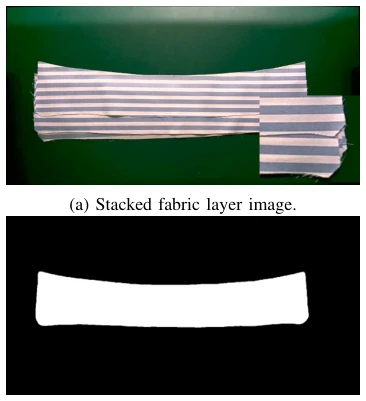
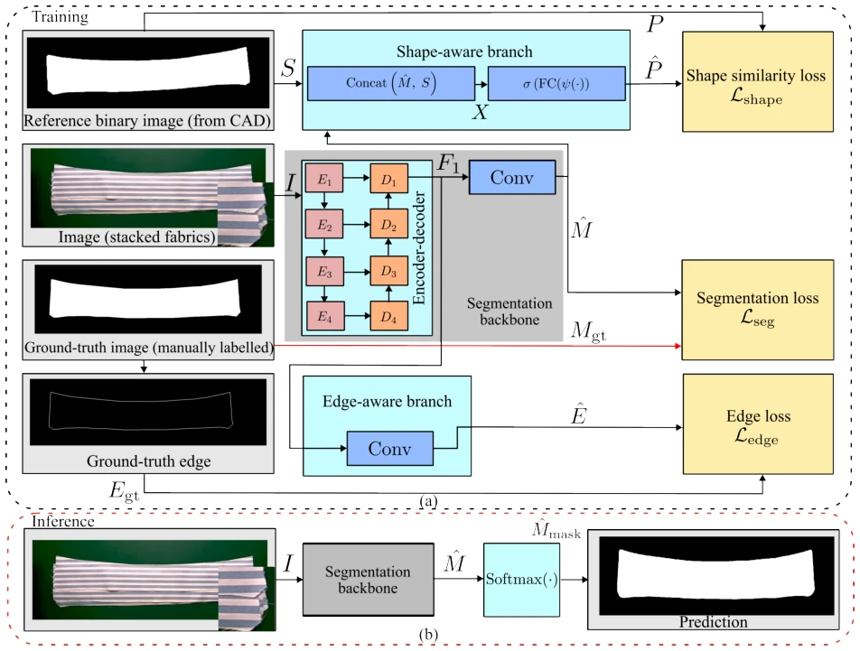
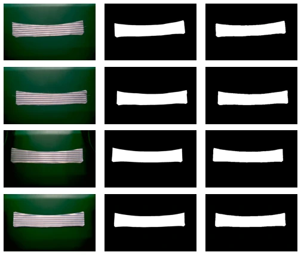

This paper offers a potent remedy for the "hell-level" difficulty task of stacked fabric segmentation. The authors did not pursue fancy end-to-end large models, but rather straightforwardly added two "external modules" to the traditional Encoder-Decoder skeleton: one focuses on edges, the other compares shapes using CAD drawings. This "multi-task auxiliary training" approach is not new in academia, but it is indeed effective for scenarios like fabric where boundaries are blurry and layers are similar. However, the criticism point is obvious: during the inference stage, those two "external modules" are directly removed, leaving only the backbone, which is typical of "cheating during training, running naked during inference", although reasonable in engineering, it is somewhat disjointed logically. Additionally, relying on CAD models to generate reference shapes is clever, but in the real world, fabrics often have wrinkles and deformations, is fully aligning with the ideal CAD shape too idealistic? Although the experimental data is beautiful, the dataset only has 235 images, the sample size is small, and generalization ability needs verification. Overall, this is a typical "small but beautiful" engineering optimization paper, strong practicality, but slightly lacking in theoretical depth, suitable for direct deployment, not suitable for top conference theory groups.
Fabric Destacking is a key pain point in automated apparel production, with the core difficulty lying in accurately segmenting the top layer of fabric. In real-world scenarios, the boundaries of stacked fabrics are often blurry and irregular, and the upper and lower layers of fabric, even the background, are highly similar in color and texture, causing traditional methods to fail. Existing semantic segmentation methods (such as UNet [4], SegNet [6], DeepLab series [7]) are versatile but lack the ability to handle fine boundaries, making it difficult to distinguish inter-layer differences. Edge-based methods (such as GSCNN [5], DCAN [10], CASENet [11]) can locate contours, but when facing high-similarity layered scenarios, they often produce breaks or false detections due to lack of global shape constraints. Additionally, shape prior methods for anatomical or organ segmentation (such as ACNNs [15]) are typically computationally complex and rely on extra annotations, making them difficult to directly transfer to non-rigid, easily deformable objects like fabric. Therefore, there is an urgent need for a segmentation scheme that can accurately locate blurry edges while utilizing prior knowledge to constrain overall shape robustness, to support subsequent grasping and sewing operations.

Fig. 1: Fabric stack image and top-layer segmentation.
This method proposes an architecture based on "multi-branch supervision during training, single backbone output during inference". The overall process is divided into two stages: training and inference; during training, input images are processed through three branches simultaneously; during inference, only the segmentation backbone network fine-tuned through multi-task learning is used. The core innovation lies in the design of two auxiliary branches: 1) Edge-aware branch: extracts features from the high-resolution feature map (F1) of the segmentation backbone, and predicts the edge probability map through convolutional layers and Sigmoid activation. This branch uses real edge masks (E_gt) for supervision, forcing the network to focus on pixel-level boundary details, solving the problem of blurry fabric edges. 2) Shape-aware branch: This is a lightweight CNN classifier. It concatenates the predicted segmentation mask with the reference shape mask (S) from the CAD model, inputs it into the network to predict whether the two are aligned (P). This branch is pre-trained as a binary classifier before training, then fine-tuned jointly with the backbone, using cross-entropy loss (L_shape) to constrain the global geometric structure of the prediction results, preventing fragmented segmentation that does not conform to physical laws. The loss function consists of three parts: segmentation loss (L_seg, combining Cross-Entropy and Dice Loss), edge loss (L_edge), and shape loss (L_shape), balancing task weights through hyperparameters. This design enables the backbone network to learn local edges and global shape features simultaneously during the training phase, thereby outputting segmentation results that are both accurate and conform to physical morphology during inference.

Fig. 2: Proposed training architecture and inference scheme.
Experiments were conducted on a real human collar fabric dataset containing 235 images, with data including pixel-level segmentation masks, edge masks, and CAD reference shapes. Evaluation metrics cover IoU, pixel accuracy (PA), edge mean squared error (EMSE), and edge root mean squared error (ERMSE). Baseline comparisons include: Standard UNet (Baseline), Edge branch only (Baseline+EA), and Full Model (Proposed). Ablation experiments show that after adding the edge branch, IoU increased from 93.25% to 96.24%, and ERMSE decreased from 5.03 to 3.19, proving edge supervision is effective. After further adding the shape branch, IoU reached 96.80%, and ERMSE further decreased to 2.58, indicating that shape constraints significantly improved global structural consistency. Qualitative results (Fig. 3) also show that this method maintains segmentation integrity and sharpness in both blurry boundary and complex contour regions. Although the results are excellent, the dataset scale is small (235 images), and it relies on CAD priors; future work needs to verify generalization ability in scenarios without CAD or with severe deformation.

Fig. 3: Qualitative segmentation results. Quantitative compar- ison is included in Table I.